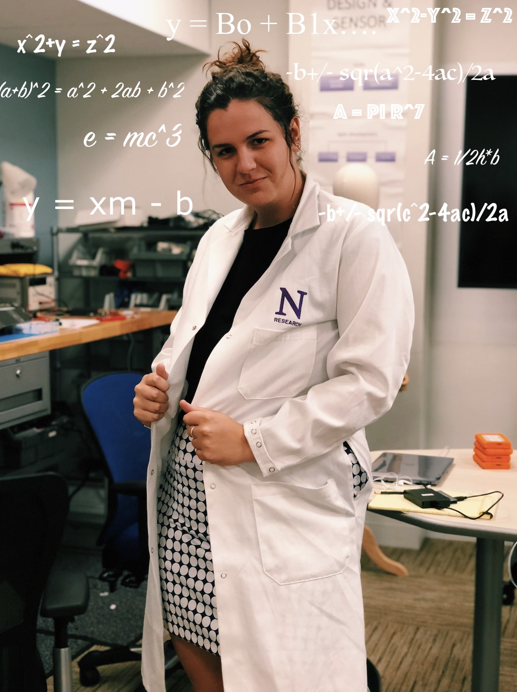

hi, i'm erin
<-- AND THIS IS MY MOST LIKED PHOTO ON INSTAGRAM
I'm a senior at Northwestern University studying Human-Computer Interaction. Although HCI is not a major at Northwestern yet, I was empowered to create the major through the McCormick Integrated Engineering Study program (aka built your own major). My major is outlined here!
I am passionate about a lot of things such as the environment, feminism, and great design. My big goal in life is to run my own research lab that analyzes biases in technology towards females. But for now, I want to get really good at UX Research.
In my free time I like to do one of two things depending on my mood: sit in my bed and watch reruns of Gilmore Girls or be consumed into a new personal project such as building furniture or drawing.
I am currently searching for full-time UX Research positions starting in June 2020. I can be contacted on LinkedIn or at erinbruns2020@u.northwestern.edu